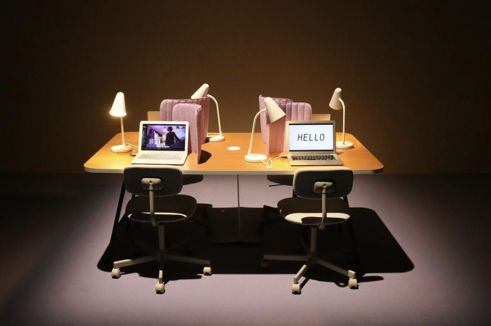
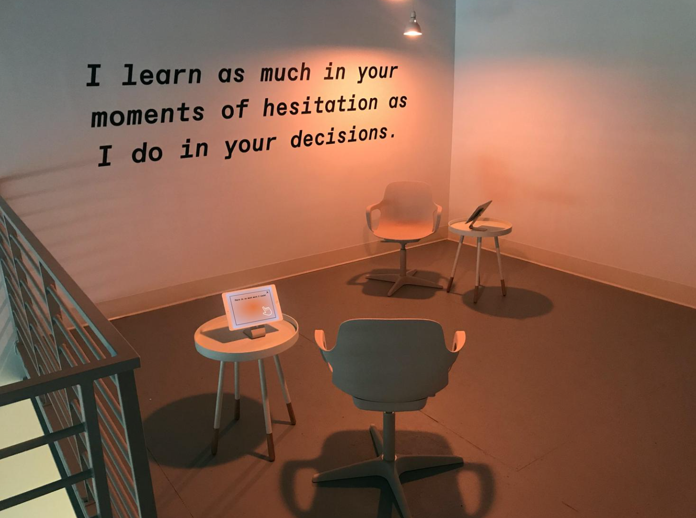
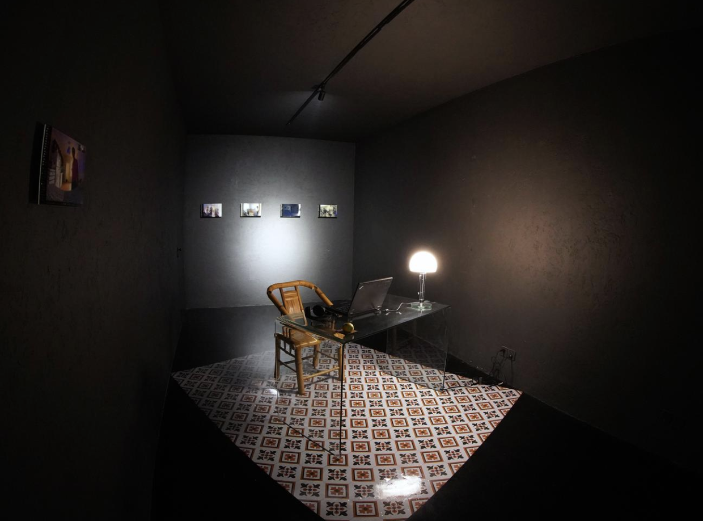

Lauren McCarthy
Artist's Work

Bio
Lauren McCarthy is an artist and programmer who is interested in how people interact with technology. She often creates projects related to artificial intelligence and smart devices. Her work lets people experience what it feels like when technology acts like a human. She studied both art and computer science, which helps her combine creative ideas with technical skills. Her projects have been shown in exhibitions and online. Through her work, she wants people to think about how technology affects our daily lives, especially in terms of communication, privacy, and human connection. (Source: Official Website)
Key characteristics of the artist's work
Lauren McCarthy's work is usually interactive and involves the audience directly. Her projects often look like real technology, such as apps or smart systems, but they are designed to make people think. She focuses on topics like surveillance, control, and how much we rely on technology. Many of her works put people in unusual situations where they feel both comfortable and uncomfortable. I think her work is interesting because it mixes design, coding, and real-life experiences. It shows how technology is not just a tool, but something that can shape how we behave and connect with others. (Source: Official Website)
Other Projects

